Note
ModelGrid classes demo
The three modelgrid classes StructuredGrid, VertexGrid, and UnstructuredGrid will be demonstrated in this notebook.
All three classes behave similarly, as they inherit their base functionality from the same “parent” object. Even through they behave similarly, there are also some differences between the three classes based upon the specific grid type.
This notebook will cover:
How to access the modelgrid object from a model and common usages for the modelgrid
How to build modelgrid objects from scratch
Useful methods and features
[1]:
import sys
import os
import shutil
from tempfile import TemporaryDirectory
import numpy as np
import matplotlib as mpl
import matplotlib.pyplot as plt
# run installed version of flopy or add local path
try:
import flopy
except:
fpth = os.path.abspath(os.path.join("..", ".."))
sys.path.append(fpth)
import flopy
from flopy.discretization import StructuredGrid, VertexGrid, UnstructuredGrid
import flopy.utils.binaryfile as bf
print(sys.version)
print("numpy version: {}".format(np.__version__))
print("matplotlib version: {}".format(mpl.__version__))
print("flopy version: {}".format(flopy.__version__))
3.10.10 | packaged by conda-forge | (main, Mar 24 2023, 20:08:06) [GCC 11.3.0]
numpy version: 1.24.3
matplotlib version: 3.7.1
flopy version: 3.3.7
[2]:
# set the names of our modflow executables
# assumes that the executable is in users path statement
mf6_exe = "mf6"
gridgen_exe = "gridgen"
[3]:
# set paths to each of our model types for this example notebook
spth = os.path.join("..", "..", "examples", "data", "freyberg_multilayer_transient")
spth6 = os.path.join("..", "..", "examples", "data", "mf6-freyberg")
vpth = os.path.join("..", "..", "examples", "data")
upth = os.path.join("..", "..", "examples", "data")
u_data_ws = os.path.join("..", "..", "examples", "data", "unstructured")
# temporary workspace
temp_dir = TemporaryDirectory()
gridgen_ws = temp_dir.name
Accessing the modelgrid and common usage
How to access the modelgrid object from a model
FloPy model objects have a built in method that dynamically assembles a modelgrid from model discretization information. Therefore, if the user updates their DIS file, when they call the modelgrid property the new discretization information will be included within it.
Modflow-2005 example
[4]:
# Load a modflow-2005 model
ml = flopy.modflow.Modflow.load("freyberg.nam", model_ws=spth)
# access the modelgrid object
modelgrid = ml.modelgrid
print(type(modelgrid))
<class 'flopy.discretization.structuredgrid.StructuredGrid'>
Spaitial refernce information that is stored in the NAM file, such as:
xll : geographic location of lower left model corner x-coordinateyll : geographic location of lower left model corner y-coordinaterotation : modelgrid rotation in degreesepsg : epsg code of modelgrid coordinate systemproj4_str : proj4 projection informationcan be automatcally read in and applied to the modelgrid. FloPy will also write this information out when the user saves their model to file.
This information can be seen by printing the modelgrid
[5]:
print(modelgrid)
xll:622241.1904510253; yll:3343617.741737109; rotation:15.0; crs:EPSG:32614; units:meters; lenuni:2
Modflow-6 example
Modflow-6 models also have modelgrid objects attached to them. These grids function in the way. Here is an example.
[6]:
# load a modflow-6 simulation
sim = flopy.mf6.MFSimulation.load(sim_ws=spth6, verbosity_level=0)
# get a model object from the simulation
ml = sim.get_model("freyberg")
# access the modelgrid
modelgrid1 = ml.modelgrid
print(type(modelgrid1))
print(modelgrid1)
<class 'flopy.discretization.structuredgrid.StructuredGrid'>
xll:0.0; yll:0.0; rotation:0.0; units:meters; lenuni:2
Note how there is no spatial reference information associated with this modelgrid. This is because, there it was not specified in the name file. In the following section, the notebook will show how to access this information from a modelgrid and how to set this information in a modelgrid object.
Accessing and setting modelgrid reference information
Accessing modelgrid reference information
There are properties attached to the modelgrid that allows the user to access reference information:
xoffset: returns the x-coordinate for the modelgrid’s lower left corneryoffset: returns the y-coordinate for the modelgrid’s lower left cornerangrot: returns the rotation of the modelgrid in degreesepsg: returns the modelgrid epsg codeproj4: returns the modelgrid proj4_str information
[7]:
xoff = modelgrid.xoffset
yoff = modelgrid.yoffset
angrot = modelgrid.angrot
epsg = modelgrid.epsg
proj4 = modelgrid.proj4
print(
"xoff: {}\nyoff: {}\nangrot: {}\nepsg: {}\nproj4: {}".format(
xoff, yoff, angrot, epsg, proj4
)
)
xoff: 622241.1904510253
yoff: 3343617.741737109
angrot: 15.0
epsg: 32614
proj4: +proj=utm +zone=14 +datum=WGS84 +units=m +no_defs +type=crs
/home/runner/micromamba-root/envs/flopy/lib/python3.10/site-packages/pyproj/crs/crs.py:1286: UserWarning: You will likely lose important projection information when converting to a PROJ string from another format. See: https://proj.org/faq.html#what-is-the-best-format-for-describing-coordinate-reference-systems
proj = self._crs.to_proj4(version=version)
Setting modelgrid reference information
The set_coord_info() method allows the user to set some or all of the modelgrid’s coordinate reference information. Here is an example using the modflow6 modelgrid:
[8]:
# show the coordinate info before setting it
print("Before: {}\n".format(modelgrid1))
# set reference infromation
modelgrid1.set_coord_info(
xoff=xoff, yoff=yoff, angrot=angrot, epsg=epsg, proj4=proj4
)
print("After: {}".format(modelgrid1))
Before: xll:0.0; yll:0.0; rotation:0.0; units:meters; lenuni:2
After: xll:622241.1904510253; yll:3343617.741737109; rotation:15.0; crs:EPSG:32614; units:meters; lenuni:2
/home/runner/work/flopy/flopy/flopy/utils/crs.py:119: PendingDeprecationWarning: the epsg argument will be deprecated and will be removed in version 3.4. Use crs instead.
warnings.warn(
The user can also set individual parts of the coordinate information if they do not want to supply all of the fields
[9]:
# change the offsets and rotation of the modelgrid
angrot = 55
xll = 100
yll = 1000
modelgrid1.set_coord_info(xoff=xll, yoff=yll, angrot=angrot)
print(modelgrid1)
xll:100; yll:1000; rotation:55; crs:EPSG:32614; units:meters; lenuni:2
Using the modelgrid with plotting routines
FloPy’s plotting routines accept a model or modelgrid object to determine cell locations for plotting. Here is an example of plotting with the modelgrid object
[10]:
fig, axs = plt.subplots(
nrows=1, ncols=3, figsize=(18, 6), subplot_kw={"aspect": "equal"}
)
rotation = [0, 15, 30]
for ix, ax in enumerate(axs):
modelgrid1.set_coord_info(angrot=rotation[ix])
pmv = flopy.plot.PlotMapView(modelgrid=modelgrid1, ax=ax)
pmv.plot_grid()
ax.set_title("Modelgrid: {} degrees rotation".format(rotation[ix]));
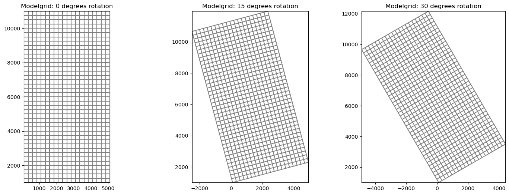
The grid lines can also be plotted directly from the modelgrid object
[11]:
modelgrid1.plot();
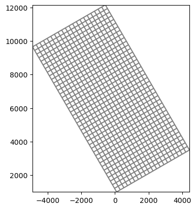
Building modelgrid objects from scratch
StructuredGrid example
The StructuredGrid class can accept a number of parameters, however for a minimal working StructuredGrid the user only needs to provide:
delc: Array of cell widths along columnsdelr: Array of cell widths along rows
Other optional, but useful parameters the user can supply include: - top : Array of model Top elevations - botm : Array of layer Botm elevations - idomain : An ibound or idomain array that specifies active and inactive cells - lenuni : Model length unit integer - epsg : epsg code of model coordinate system - proj4 : proj4 str describining model coordinate system - prj : path to “.prj” projection file that describes the model coordinate system - xoff : x-coordinate
of the lower-left corner of the modelgrid - yoff : y-coordinate of the lower-left corner of the modelgrid - angrot : model grid rotation - nlay : number of model layers - nrow : number of model rows - ncol : number of model columns - laycbd : array of length, nlay indicating if Quasi-3D confining layers exist
In this example, some of the more common parameters are used to create a ``StructuredGrid``
[12]:
xll = 3579
yll = 10000
rotation = 0
nrow = 40
ncol = 20
nlay = 1
Lx = 4000
Ly = 8000
# create delr and delc arrays
delr = np.ones((ncol,)) * (Lx / ncol)
delc = np.ones((nrow,)) * (Ly / nrow)
# create a sloped top and bottom
slope = np.linspace(100, 0, nrow)
slope.shape = (1, nrow)
top = np.ones((nrow, ncol)) * slope.T
botm = np.ones((nlay, nrow, ncol)) * (top - 100)
# create an ibound array
ibound = np.ones((nrow, ncol), dtype=int)
ibound[-1, 0:5] = 0
ibound[-1, 15:] = 0
modelgrid = StructuredGrid(
delr=delr,
delc=delc,
top=top,
botm=botm,
idomain=ibound,
nlay=nlay,
xoff=xll,
yoff=yll,
angrot=rotation,
)
modelgrid
[12]:
xll:3579; yll:10000; rotation:0; units:undefined; lenuni:0
Plot some of the modelgrid information
[13]:
fig, ax = plt.subplots(figsize=(10, 10))
pmv = flopy.plot.PlotMapView(modelgrid=modelgrid)
pc = pmv.plot_array(modelgrid.top, alpha=0.5)
pmv.plot_grid()
pmv.plot_ibound()
plt.colorbar(pc)
ax.set_title("Top elevations and Ibound from StructuredGrid");
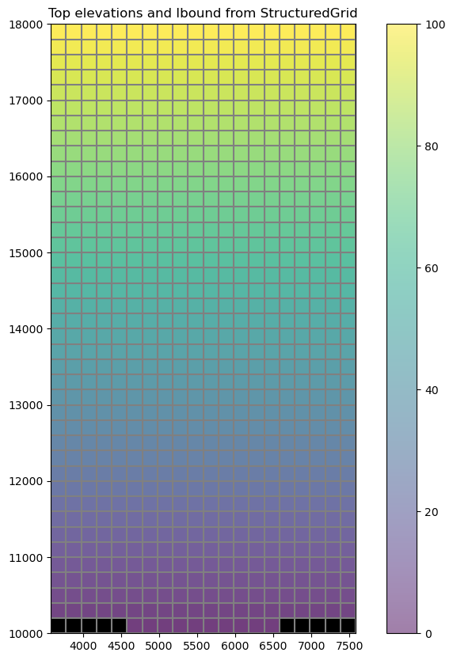
Plot a CrossSection of the structured grid
[14]:
col = 4
figure, ax = plt.subplots(figsize=(15, 6))
xc = flopy.plot.PlotCrossSection(modelgrid=modelgrid, line={"column": col})
pc = xc.plot_array(modelgrid.top, alpha=0.5)
xc.plot_grid()
xc.plot_ibound()
plt.colorbar(pc)
plt.title("Cross-Section of StructuredGrid");
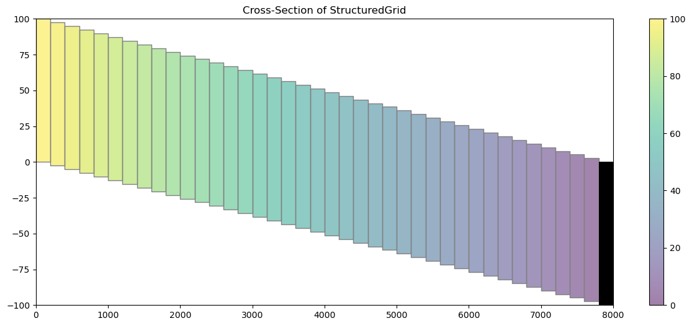
VertexGrid example
Before building the VertexGrid class we must first develop a grid. This example uses the Gridgen class and executable to produce the same grid as the MODFLOW 6 Quick Start example that is shown on the main page of the flopy repository (https://github.com/modflowpy/flopy).
NOTE: The Gridgen class requires that etither a path to the executable is provided, that the executable exists in the same directory as the script, or that the executable is in the machine’s PATH variables to run properly.
[15]:
from flopy.utils.gridgen import Gridgen
from flopy.utils.geometry import Polygon
name = "dummy"
nlay = 3
nrow = 10
ncol = 10
delr = delc = 1.0
top = 1
bot = 0
dz = (top - bot) / nlay
botm = [top - k * dz for k in range(1, nlay + 1)]
# Create a dummy model and regular grid to use as the base grid for gridgen
sim = flopy.mf6.MFSimulation(sim_name=name, sim_ws=gridgen_ws, exe_name="mf6")
gwf = flopy.mf6.ModflowGwf(sim, modelname=name)
dis = flopy.mf6.ModflowGwfdis(
gwf,
nlay=nlay,
nrow=nrow,
ncol=ncol,
delr=delr,
delc=delc,
top=top,
botm=botm,
)
# Create and build the gridgen model with a refined area in the middle
g = Gridgen(gwf.modelgrid, model_ws=gridgen_ws)
polys = [Polygon([(4, 4), (6, 4), (6, 6), (4, 6), (4, 4)])]
g.add_refinement_features(polys, "polygon", 3, range(nlay))
g.build()
[16]:
# get the vertex grid properties from gridgen and examine them
gridprops = g.get_gridprops_vertexgrid()
gridprops.keys()
[16]:
dict_keys(['nlay', 'ncpl', 'top', 'botm', 'vertices', 'cell2d'])
Building the VertexGrid
VertexGrid has many similar parameters as the previous StructuredGrid example. For a minimal working modelgrid, VertexGrid requires:
vertices: list of vertex number, xvertex, yvertex that make up the gridcell2d: list containing node number, xcenter, ycenter, and vertex numbers (from vertices)
Other optional, but useful parameters include:
top: Array of model Top elevationsbotm: Array of layer Botm elevationsidomain: An ibound or idomain array that specifies active and inactive cellslenuni: Model length unit integerepsg: epsg code of model coordinate systemproj4: proj4 str describining model coordinate systemprj: path to “.prj” projection file that describes the model coordinate systemxoff: x-coordinate of the lower-left corner of the modelgridyoff: y-coordinate of the lower-left corner of the modelgridangrot: model grid rotationnlay: number of model layersncpl: number of cells per model layer
In this example, some of the more common parameters are used to create a ``VertexGrid``
[17]:
vertices = gridprops["vertices"]
cell2d = gridprops["cell2d"]
top = gridprops["top"]
botm = gridprops["botm"]
nlay = gridprops["nlay"]
ncpl = gridprops["ncpl"]
idomain = np.ones((nlay, ncpl), dtype=int)
modelgrid = VertexGrid(
vertices=vertices,
cell2d=cell2d,
top=top,
idomain=idomain,
botm=botm,
nlay=nlay,
ncpl=ncpl,
)
print(modelgrid)
xll:0.0; yll:0.0; rotation:0.0; units:undefined; lenuni:0
Plot some of the modelgrid information
[18]:
fig, ax = plt.subplots(figsize=(10, 10))
pmv = flopy.plot.PlotMapView(modelgrid=modelgrid)
pc = pmv.plot_array(modelgrid.top, alpha=0.5)
pmv.plot_grid()
pmv.plot_ibound()
plt.colorbar(pc)
ax.set_title("Top elevations from VertexGrid");
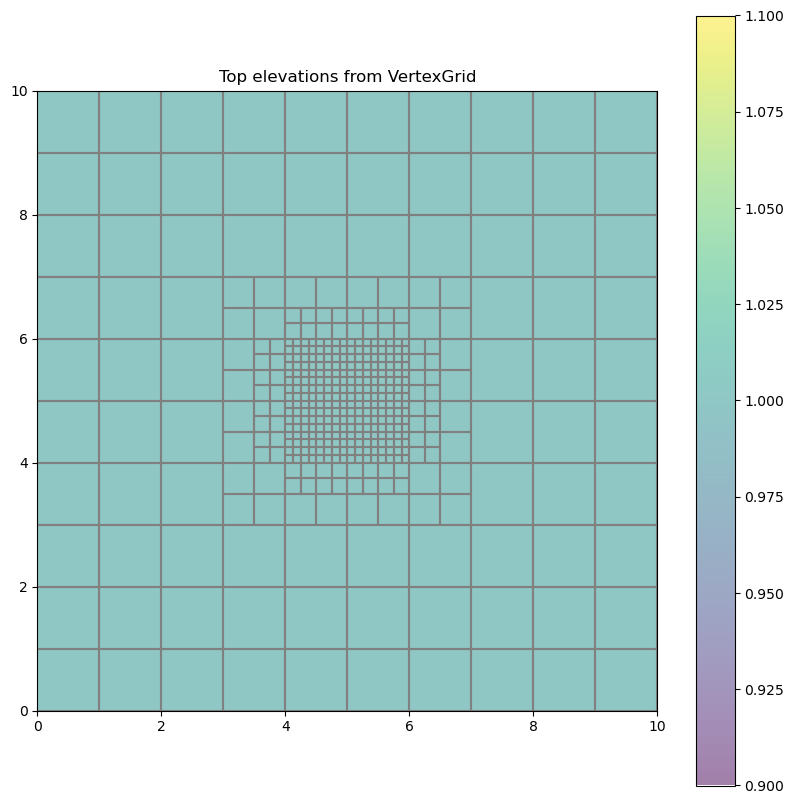
Plot a CrossSection of the vertex grid
[19]:
line = [(4.45, 0), (4.45, 10)]
figure, ax = plt.subplots(figsize=(15, 6))
xc = flopy.plot.PlotCrossSection(modelgrid=modelgrid, line={"line": line})
pc = xc.plot_array(modelgrid.botm, alpha=0.5)
xc.plot_grid()
xc.plot_ibound()
plt.colorbar(pc)
plt.title("Cross-Section of VertexGrid");
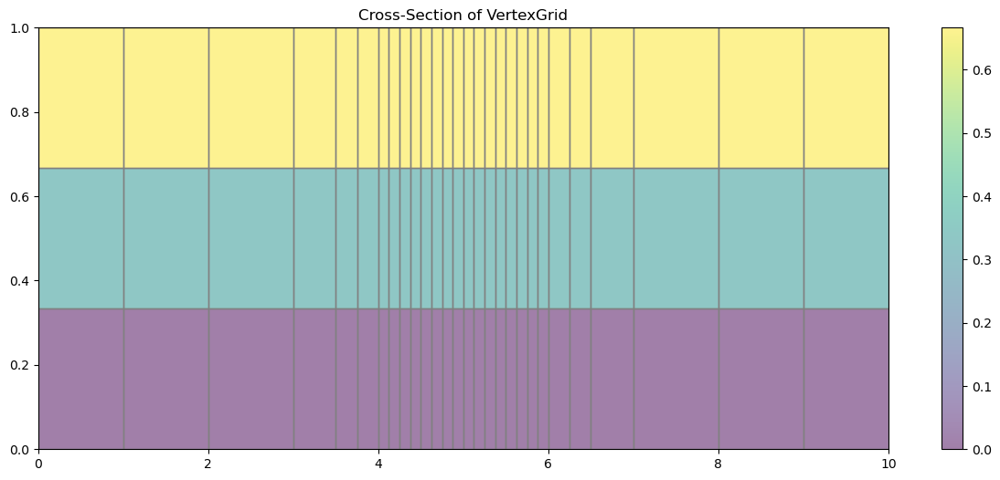
UnstructuredGrid example
Before building an UnstructuredGrid we must first develop a grid. This example loads saved grid information from data files to create an UnstructuredGrid.
Note: Gridgen can also be used to develop an unstructured grid and examples of how to do this can be found in the notebook flopy3_gridgen.ipynb
[20]:
# simple functions to load vertices and indice lists
def load_verts(fname):
verts = np.genfromtxt(
fname, dtype=[int, float, float], names=["iv", "x", "y"]
)
verts["iv"] -= 1 # zero based
return verts
def load_iverts(fname):
f = open(fname, "r")
iverts = []
xc = []
yc = []
for line in f:
ll = line.strip().split()
iverts.append([int(i) - 1 for i in ll[4:]])
xc.append(float(ll[1]))
yc.append(float(ll[2]))
return iverts, np.array(xc), np.array(yc)
Building the UnstructuredGrid
UnstructuredGrid has many similar parameters as the previous VertexGrid example. For a minimal working, but “incomplete” modelgrid, UnstructuredGrid requires:
vertices: list of vertex number, xvertex, yvertex that make up the gridiverts: list of vertex numbers that make up each cellxcenters: list of x center coordinates for all cells in the grid if the grid varies by layer or for all cells in a layer if the same grid is used for all layersycenters: list of y center coordinates for all cells in the grid if the grid varies by layer or for all cells in a layer if the same grid is used for all layers
For a “complete” UnstructuredGrid these parameters must be provided in addition to the ones listed above:
top: Array of model Top elevationsbotm: Array of layer Botm elevations
Other optional, but useful parameters include:
idomain: An ibound or idomain array that specifies active and inactive cellslenuni: Model length unit integerncpl: one dimensional array of number of cells per model layerepsg: epsg code of model coordinate systemproj4: proj4 str describining model coordinate systemprj: path to “.prj” projection file that describes the model coordinate systemxoff: x-coordinate of the lower-left corner of the modelgridyoff: y-coordinate of the lower-left corner of the modelgridangrot: model grid rotation
In this example, some of the more common parameters are used to create a ``UnstructuredGrid``
[21]:
# load vertices
fname = os.path.join(u_data_ws, "ugrid_verts.dat")
verts = load_verts(fname)
# load the index list into iverts, xc, and yc
fname = os.path.join(u_data_ws, "ugrid_iverts.dat")
iverts, xc, yc = load_iverts(fname)
# create a 3 layer model grid
ncpl = np.array(3 * [len(iverts)])
nnodes = np.sum(ncpl)
top = np.ones((nnodes))
botm = np.ones((nnodes))
# set top and botm elevations
i0 = 0
i1 = ncpl[0]
elevs = [100, 0, -100, -200]
for ix, cpl in enumerate(ncpl):
top[i0:i1] *= elevs[ix]
botm[i0:i1] *= elevs[ix + 1]
i0 += cpl
i1 += cpl
# create the modelgrid
modelgrid = UnstructuredGrid(
vertices=verts,
iverts=iverts,
xcenters=xc,
ycenters=yc,
top=top,
botm=botm,
ncpl=ncpl,
)
Plot some of the modelgrid information
[22]:
# rotate the modelgrid for the fun of it
modelgrid.set_coord_info(angrot=10)
fig, ax = plt.subplots(figsize=(10, 10))
pmv = flopy.plot.PlotMapView(modelgrid=modelgrid)
pmv.plot_grid()
# plot cell centers
plt.plot(modelgrid.xcellcenters, modelgrid.ycellcenters, "bo")
ax.set_title("Cell centers from UnstructuredGrid");
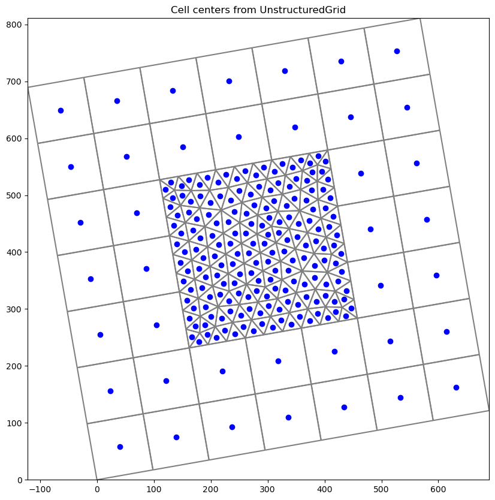
Plot a CrossSection of the unstructured grid
[23]:
line = [(350, 0), (300, 800)]
figure, ax = plt.subplots(figsize=(15, 6))
# note geographic_coords=True should be set for unstructured grid cross-sections
xc = flopy.plot.PlotCrossSection(
modelgrid=modelgrid, line={"line": line}, geographic_coords=True
)
pc = xc.plot_array(modelgrid.botm, alpha=0.5)
xc.plot_grid()
plt.colorbar(pc)
plt.title("Cross-Section of UnstructuredGrid");
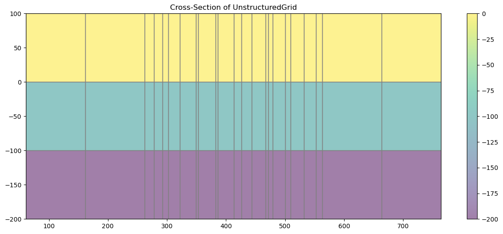
Useful methods and properties of the modelgrid classes
Many of the useful methods and features of the modelgrid classes will be presented in this section of the Notebook. The modelgrid classes have a large number of common properties and methods that we will explore. Let’s first load a model and look at all of the common features.
[24]:
# load a modflow-6 freyberg simulation
sim = flopy.mf6.MFSimulation.load(
sim_ws=spth6, verbosity_level=0, exe_name=mf6_exe
)
# get a model object from the simulation
ml = sim.get_model("freyberg")
# access the modelgrid
modelgrid = ml.modelgrid
# and set the coordinate info
modelgrid.set_coord_info(
xoff=622241.1904510253,
yoff=3343617.741737109,
angrot=15.0,
proj4="+proj=utm +zone=14 +ellps=WGS84 +datum=WGS84 +units=m +no_defs",
)
/home/runner/work/flopy/flopy/flopy/utils/crs.py:137: PendingDeprecationWarning: the proj4 argument will be deprecated and will be removed in version 3.4. Use crs instead.
warnings.warn(
Common properties
There are many common (shared) properties that are present in StructuredGrid, VertexGrid, and UnstructuredGrid:
Grid info properties
is_valid: returns True if modelgrid is validis_complete: returns True if modelgrid has all basic information andtop,botm, andidomainhave been setgrid_type: returns a string representation of the grid type (“structured”, “vertex”, or “unstructured”)units: returns a string representation of model unitslenuni: returns an integer representation of model unitsextent: returns the modelgrid extent as (xmin, xmax, ymin, ymax)
[25]:
# print grid info properties
if modelgrid.is_valid and modelgrid.is_complete:
print("{} modelgrid is valid and complete\n".format(modelgrid.grid_type))
print("lenuni: {}, units: {}\n".format(modelgrid.lenuni, modelgrid.units))
print(
"lower left corner: ({0}, {2}), upper right corner: ({1}, {3})".format(
*modelgrid.extent
)
)
structured modelgrid is valid and complete
lenuni: 2, units: meters
lower left corner: (619653.0, 3343617.741737109), upper right corner: (627070.8195824706, 3354571.0952255125)
Spatial reference properties
xoffset: returns the current xoffset of the modelgridyoffset: returns the current yoffset of the modelgridangrot: returns the angle of rotation of the modelgrid in degreesangrot_radians: returns the angle of rotation of the modelgrid in radiansepsg: returns the modelgrid epsg code if it is setproj4: returns the modelgrid proj4 string if it is setprj: returns the path to the modelgrid projection file if it is set
[26]:
# Access and print some of these properties
print(
"xoffset: {}, yoffset: {}\n".format(modelgrid.xoffset, modelgrid.yoffset)
)
print(
"rotation (deg): {:.1f}, (rad): {:.4f}\n".format(
modelgrid.angrot, modelgrid.angrot_radians
)
)
print("proj4_str: {}".format(modelgrid.proj4))
xoffset: 622241.1904510253, yoffset: 3343617.741737109
rotation (deg): 15.0, (rad): 0.2618
proj4_str: +proj=utm +zone=14 +datum=WGS84 +units=m +no_defs +type=crs
Model discretization properties
shape: returns the shape of the modelgrid (tuple)ncpl: returns the number of cells per layernnodes: returns the number of cells in the modeltop: returns an array of the top elevation of the model or for unstructured grids the top elevation of all cellsbotm: retuns an array of the botm elevations of model cellscell_thickness: returns an array of model cell thicknessidomain: retruns the idomain array associated with the modelxvertices: returns an array of x-vertices for model cellsyvertices: returns an array of y-vertices for model cellszvertices: returns an array of z-vertices for model cellsxcellcenters: returns an array of x-vertices for model cell centersycellcenters: returns an array of y-vertices for model cell centersverts: returns a list of vertex number, x-coordinate, y-coordinateiverts: returns a list of cell number, vertex numbers for each cell
[27]:
# look at some model discretization information
print("Grid shape: {}\n".format(modelgrid.shape))
print("number of cells per layer: {}\n".format(modelgrid.ncpl))
print("number of cells in model: {}".format(modelgrid.nnodes))
Grid shape: (1, 40, 20)
number of cells per layer: 800
number of cells in model: 800
[28]:
# plot the model cell vertices and cell centers
fig, ax = plt.subplots(figsize=(10, 10), subplot_kw={"aspect": "equal"})
ax.plot(
np.ravel(modelgrid.xvertices),
np.ravel(modelgrid.yvertices),
"ro",
label="Grid cell vertices",
ms=5,
)
ax.plot(
np.ravel(modelgrid.xcellcenters),
np.ravel(modelgrid.ycellcenters),
"ko",
label="Grid cell centers",
ms=4,
)
plt.legend(
loc=0,
)
plt.title("modelgrid cell vertices and centers");
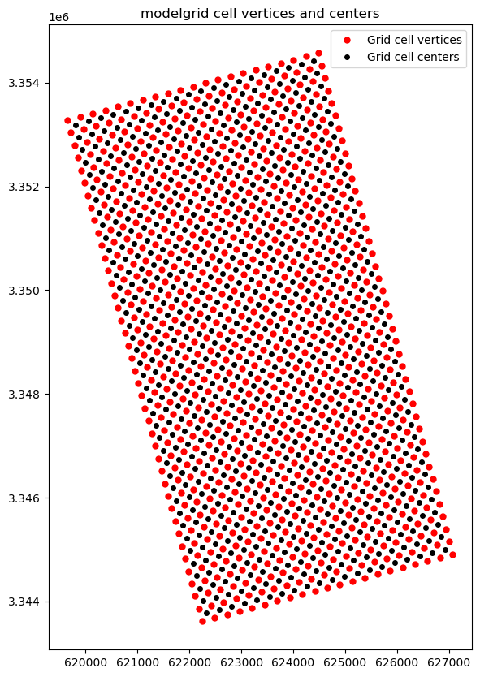
[29]:
# plot layer 1 top, botm, and thickness with ibound overlain
fig, axs = plt.subplots(
nrows=1, ncols=3, figsize=(18, 6), subplot_kw={"aspect": "equal"}
)
arrays = [modelgrid.top, modelgrid.botm, modelgrid.cell_thickness]
labels = ["top", "botm", "thickness"]
# plot arrays
for ix, ax in enumerate(axs):
pmv = flopy.plot.PlotMapView(modelgrid=modelgrid, ax=ax)
pc = pmv.plot_array(
arrays[ix], masked_values=[1e30], vmin=0, vmax=35, alpha=0.5
)
pmv.plot_grid()
pmv.plot_inactive()
ax.set_title("Modelgrid: {}".format(labels[ix]))
plt.colorbar(pc);
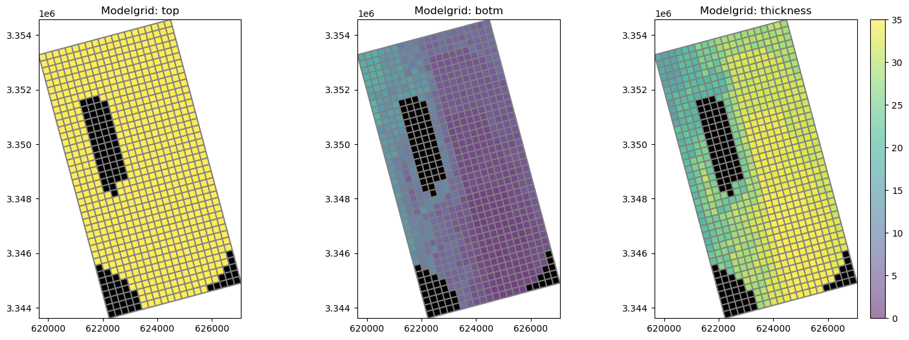
Common methods
There are also many common (shared) methods that are present in StructuredGrid, VertexGrid, and UnstructuredGrid:
Overview of methods
set_coord_info(): Method to set coordinate reference information for the modelgridget_coords(): Method to convert model coordinates to real-world coordinates based on coordinate reference informationget_local_coords(): Method to convert real-world coordinates to model coordinates based on coordinate reference informationintersect(): Method to get the cellid (StructuredGrid=(row, column) ORVertexGrid&UnstrucuturedGrid=node number) from either model coordinates or from real-world coordinatessaturated_thickness(): Method to get the saturated thicknesswrite_shapefile(): Method to write a shapefile of the grid with just the cellid attributes
set_coord_info()
Method to set coordinate reference information for the modelgrid. This method accepts the following optional parameters:
xoff: lower-left corner of modelgrid x-coordinate locationyoff: lower-left corner of modelgrid y-coordinate locationangrot: rotation of model grid in degreesepsg: epsg code for model grid projectionproj4: proj4 string describing the model grid projectionmerge_coord_info: boolean flag to either merge changes with the existing coordinate info or clear existing coordinate info before applying changes.
[30]:
fig, ax = plt.subplots(
nrows=1, ncols=2, figsize=(12, 8), subplot_kw={"aspect": "equal"}
)
# example usage with merge_coord_info=True
modelgrid.set_coord_info(xoff=50000)
print(modelgrid)
modelgrid.plot(ax=ax[0])
ax[0].set_title("merge_coord_info=True")
# example usage with merge_coord_info=False
modelgrid.set_coord_info(angrot=45, merge_coord_info=False)
print(modelgrid)
modelgrid.plot(ax=ax[1])
ax[1].set_title("merge_coord_info=False");
xll:50000; yll:3343617.741737109; rotation:15.0; crs:EPSG:32614; units:meters; lenuni:2
xll:0.0; yll:0.0; rotation:45; units:meters; lenuni:2
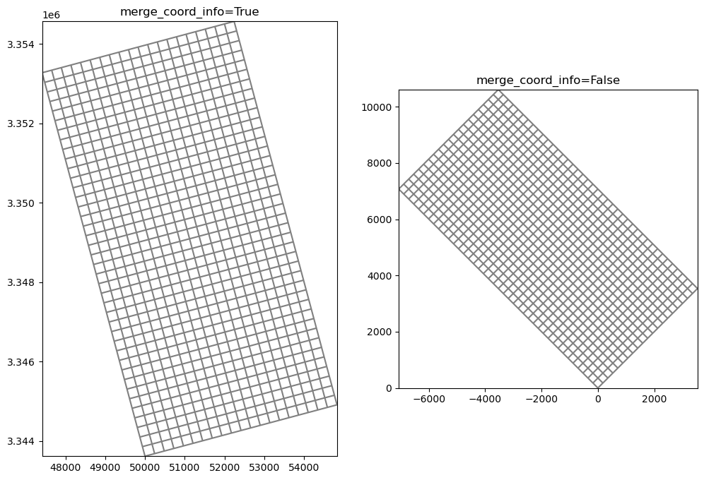
get_coords()
Method to convert model coordinates to real-world coordinates based on coordinate reference information. Input parameters include:
x: float, list, or array of x coordinate valuesy: float, list, or array of y coordinate values
[31]:
# create some synthetic pumping data
x = modelgrid.xoffset + np.random.rand(10) * 4000
y = modelgrid.yoffset + np.random.rand(10) * 10000
q = np.random.rand(10) * -1000
# get "real-world coordinates"
rw_coords = modelgrid.get_coords(x, y)
fig, ax = plt.subplots(figsize=(10, 10), subplot_kw={"aspect": "equal"})
pmv = flopy.plot.PlotMapView(modelgrid=modelgrid, ax=ax)
pmv.plot_grid()
s = ax.scatter(rw_coords[0], rw_coords[1], c=q, cmap="viridis_r")
plt.colorbar(s);
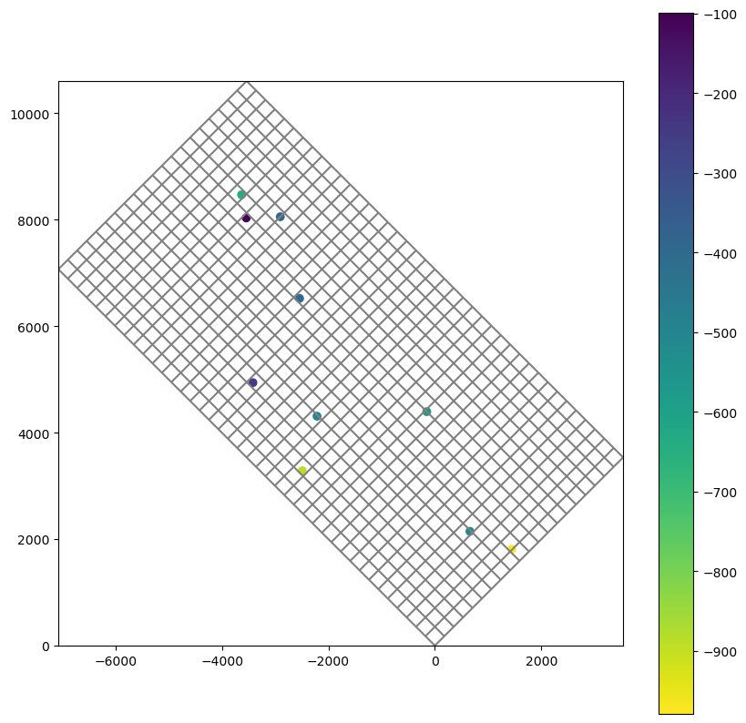
get_local_coords()
Method to convert real-world coordinates to local coordinates based on coordinate reference information. Input parameters include:
x: float, list, or array of x coordinate valuesy: float, list, or array of y coordinate values
[32]:
# reuse the "real world" coordinates from the previous cell
l_coords = modelgrid.get_local_coords(rw_coords[0], rw_coords[1])
# show that these have been properly translated
print(np.allclose(x, l_coords[0]))
print(np.allclose(y, l_coords[1]))
# plot the local coords on a modelgrid that is in model units
modelgrid.set_coord_info(merge_coord_info=False)
fig, ax = plt.subplots(figsize=(10, 10), subplot_kw={"aspect": "equal"})
pmv = flopy.plot.PlotMapView(modelgrid=modelgrid, ax=ax)
pmv.plot_grid()
s = ax.scatter(l_coords[0], l_coords[1], c=q, cmap="viridis_r")
plt.colorbar(s);
True
True
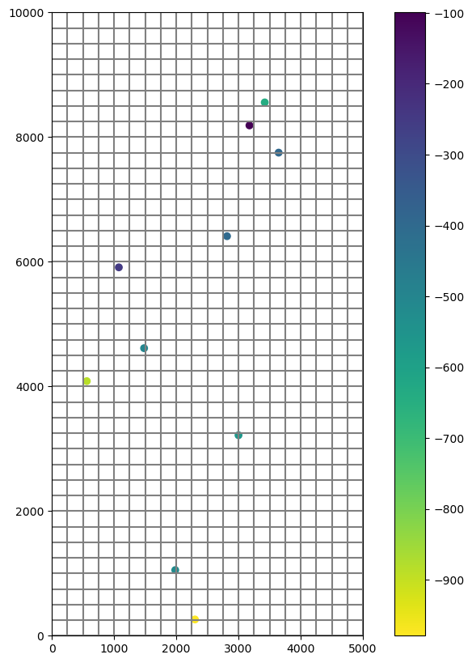
intersect()
Method to get the cellid (StructuredGrid=(row, column) OR VertexGrid & UnstrucuturedGrid=node number) from either model coordinates or from real-world coordinates. Parameters include:
x: x coordinate valuey: y coordinate valuelocal: if True x and y are in local coordinates (default is False)forgive: forgive x, y coordinate pairs and return NaN when coordinate pairs fall outside the model domain (default is False)
[33]:
# apply rotation, xoffset, and yoffset to modelgrid
modelgrid.set_coord_info(
xoff=622241.1904510253,
yoff=3343617.741737109,
angrot=15.0,
)
# generate some synthetic pumping data
x = modelgrid.xoffset + np.random.rand(10) * 4000
y = modelgrid.yoffset + np.random.rand(10) * 10000
q = np.random.rand(10) * -0.02
# intersect to get row and column locations and create pumping data
pdata = []
for ix, xc in enumerate(x):
i, j = modelgrid.intersect(xc, y[ix], forgive=True)
if not np.isnan(i) and not np.isnan(j):
if modelgrid.idomain[0, i, j]:
pdata.append([(0, i, j), q[ix]])
# remove existing wel package
ml.remove_package("wel_0")
# create a mf6 WEL package and add it to the existing model
stress_period_data = {0: pdata}
wel = flopy.mf6.modflow.ModflowGwfwel(
ml, stress_period_data=stress_period_data
)
# plot the locations from the new WEL package on the modelgrid
fig, ax = plt.subplots(figsize=(10, 10), subplot_kw={"aspect": "equal"})
pmv = flopy.plot.PlotMapView(modelgrid=modelgrid, ax=ax)
pmv.plot_grid()
pmv.plot_inactive()
pmv.plot_bc(package=wel);
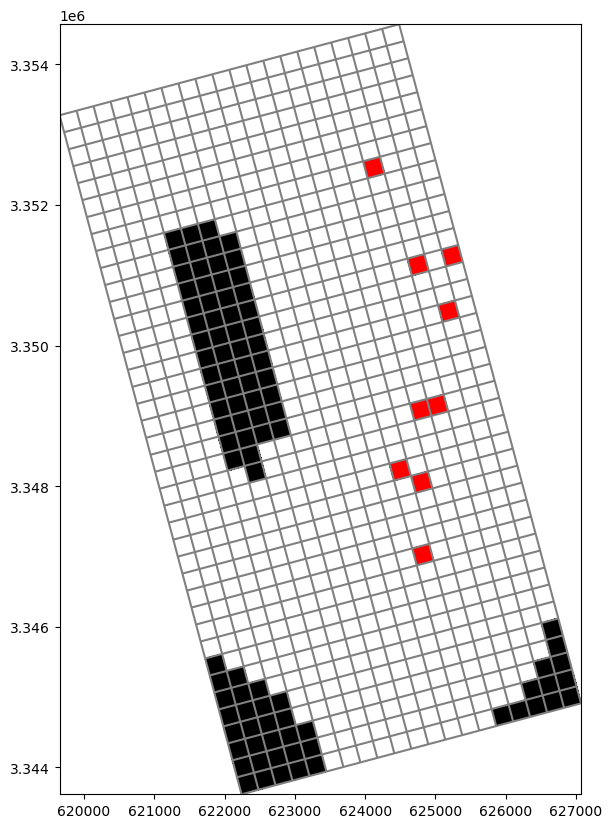
saturated_thickness()
Method to calculate the saturated thickness of each model cell from an array of elevations. Input parameters to this method include:
array: array of elevations that will be used to adjust the cell thicknessmask: float, list, tuple, or array of values to replace with a NaN value (ex. hdry and hnoflo values)
[34]:
# write inputs and run the mf6 simulation with the new wells we added above
sim.set_sim_path(gridgen_ws)
sim.write_simulation()
success, buff = sim.run_simulation(silent=True, report=True)
if success:
for line in buff:
print(line)
else:
raise ValueError("Failed to run.")
# load the binary head file from the model
ml = sim.freyberg
hds = ml.output.head()
head = hds.get_alldata()[0]
# calculate saturated thickness
sat_thk = ml.modelgrid.saturated_thickness(head, mask=[1e30])
# get thick for comparison
thk = ml.modelgrid.cell_thickness
# plot thickness and saturated thickness for comparison
fig, ax = plt.subplots(
nrows=1, ncols=2, figsize=(16, 7), subplot_kw={"aspect": "equal"}
)
pmv = flopy.plot.PlotMapView(modelgrid=ml.modelgrid, ax=ax[0])
pc = pmv.plot_array(thk, vmin=5, vmax=35)
pmv.plot_ibound()
pmv.plot_grid()
ax[0].set_title("Modelgrid thickness")
pmv = flopy.plot.PlotMapView(modelgrid=ml.modelgrid, ax=ax[1])
pc = pmv.plot_array(sat_thk, vmin=5, vmax=35)
pmv.plot_ibound()
pmv.plot_grid()
ax[1].set_title("Saturated thickness")
plt.tight_layout()
plt.colorbar(pc);
MODFLOW 6
U.S. GEOLOGICAL SURVEY MODULAR HYDROLOGIC MODEL
VERSION 6.4.1 Release 12/09/2022
MODFLOW 6 compiled Apr 12 2023 19:02:29 with Intel(R) Fortran Intel(R) 64
Compiler Classic for applications running on Intel(R) 64, Version 2021.7.0
Build 20220726_000000
This software has been approved for release by the U.S. Geological
Survey (USGS). Although the software has been subjected to rigorous
review, the USGS reserves the right to update the software as needed
pursuant to further analysis and review. No warranty, expressed or
implied, is made by the USGS or the U.S. Government as to the
functionality of the software and related material nor shall the
fact of release constitute any such warranty. Furthermore, the
software is released on condition that neither the USGS nor the U.S.
Government shall be held liable for any damages resulting from its
authorized or unauthorized use. Also refer to the USGS Water
Resources Software User Rights Notice for complete use, copyright,
and distribution information.
Run start date and time (yyyy/mm/dd hh:mm:ss): 2023/05/04 15:59:31
Writing simulation list file: mfsim.lst
Using Simulation name file: mfsim.nam
Solving: Stress period: 1 Time step: 1
Run end date and time (yyyy/mm/dd hh:mm:ss): 2023/05/04 15:59:31
Elapsed run time: 0.072 Seconds
Normal termination of simulation.

write_shapefile()
Method to write a shapefile of the grid with just the cellid attributes. Input parameters include:
filename: shapefile nameepsg: optional epsg code of the coordinate system projectionprj: optional, input projection file to be used to define the coordinate system projection
[35]:
# write a shapefile
shp_name = os.path.join(gridgen_ws, "freyberg-6_grid.shp")
epsg = "32614"
ml.modelgrid.write_shapefile(shp_name, epsg)
/home/runner/work/flopy/flopy/flopy/utils/crs.py:119: PendingDeprecationWarning: the epsg argument will be deprecated and will be removed in version 3.4. Use crs instead.
warnings.warn(
[36]:
try:
# ignore PermissionError on Windows
temp_dir.cleanup()
except:
pass